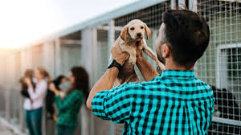
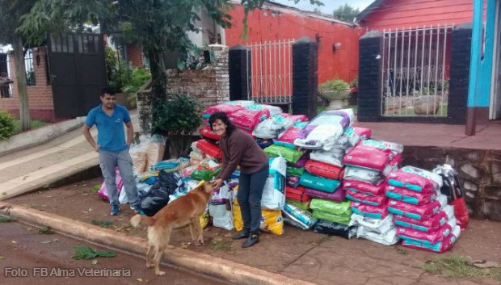
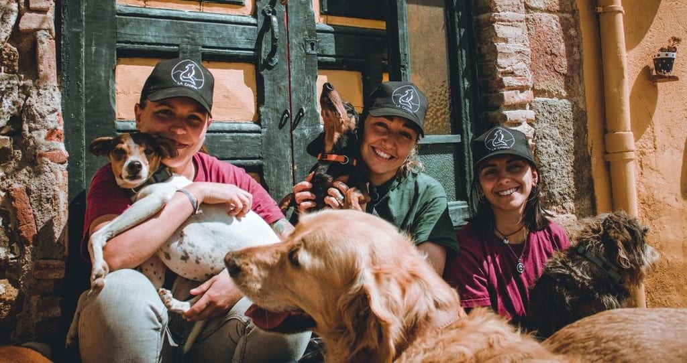

Tu apoyo puede salvar vidas. Enterate de las diferentes formas en que podés colaborar con Find My Pet y nuestra comunidad.

Brindá una segunda oportunidad a un animal que espera una familia. Si no podés adoptar, ofrecé tu hogar como tránsito temporal.

Con tu ayuda cubrimos gastos de alimento, atención veterinaria y rescates. Cada aporte cuenta, no importa el monto.
Compartí las publicaciones de animales perdidos o en adopción. Cuantas más personas vean, más chances hay de ayudar.

Sumate al equipo y colaborá en eventos, rescates o campañas. ¡Tu tiempo hace la diferencia!
Escribinos a FindMyPetArgentina@gmail.com contándonos cómo te gustaría ayudar o colaborar con la comunidad.